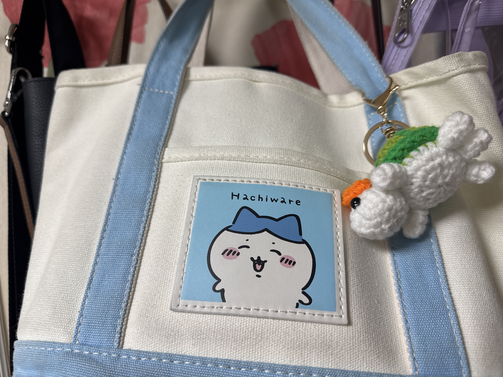
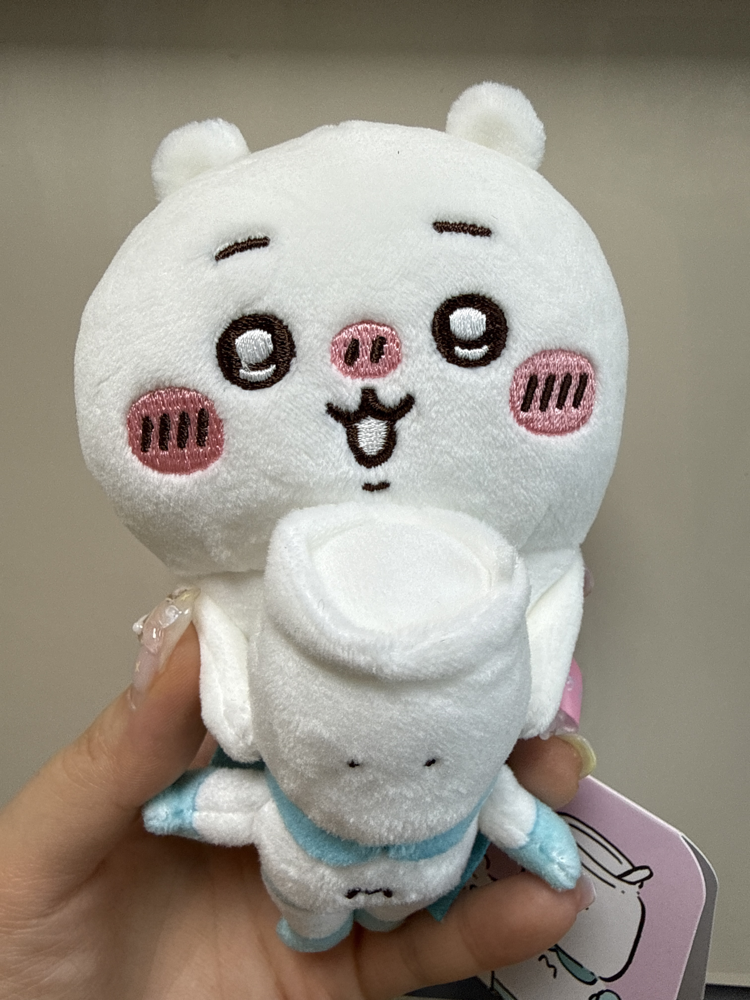
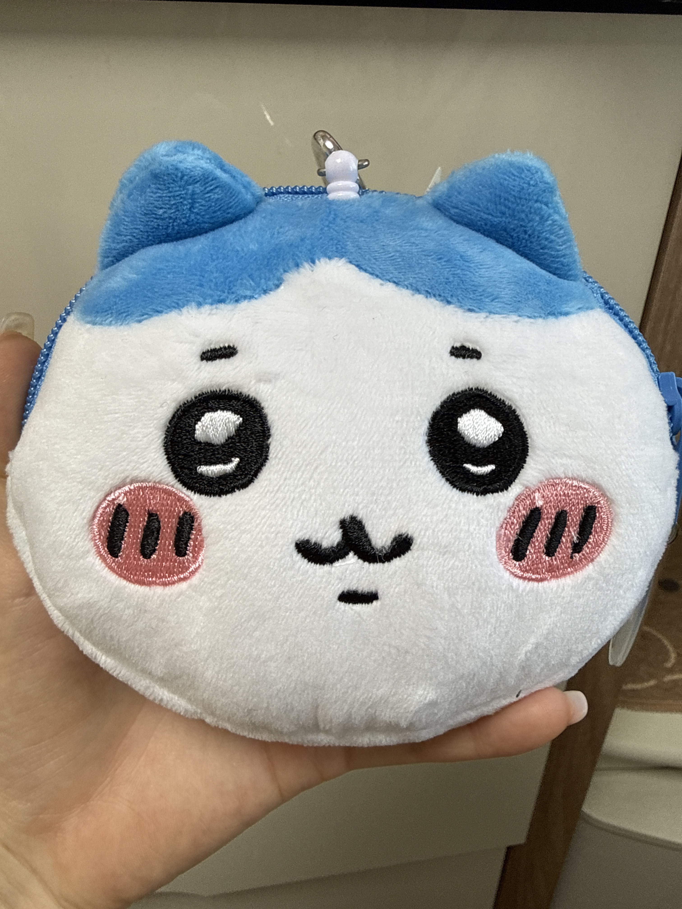
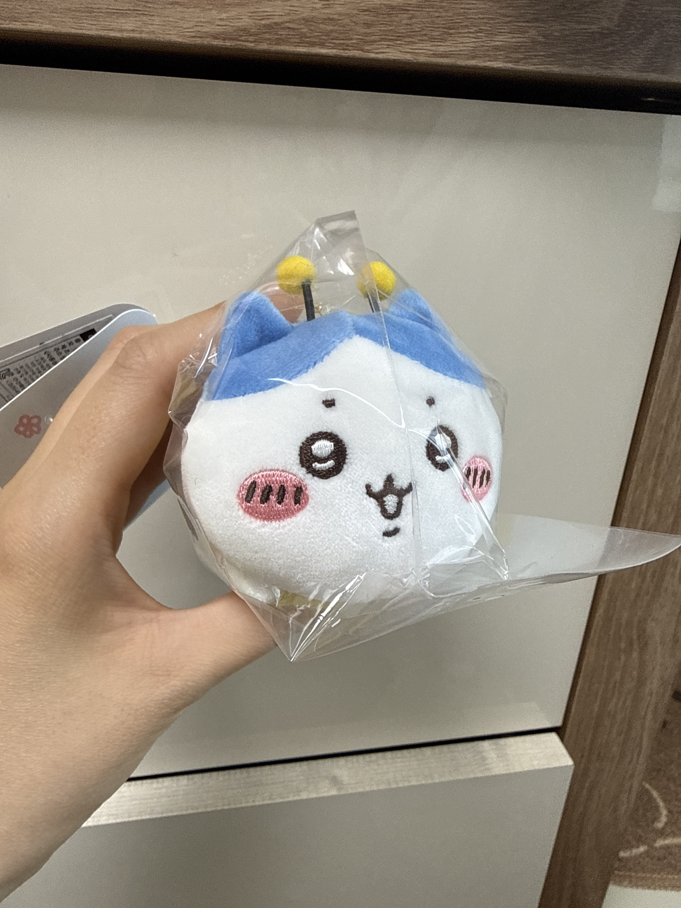
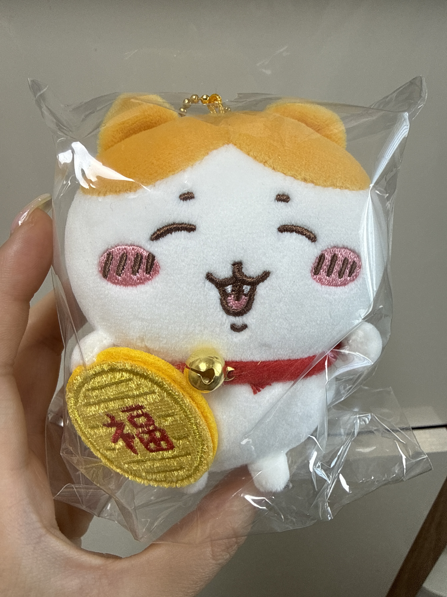
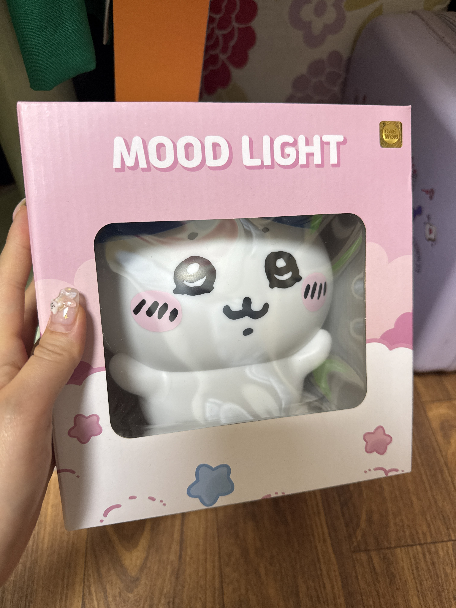
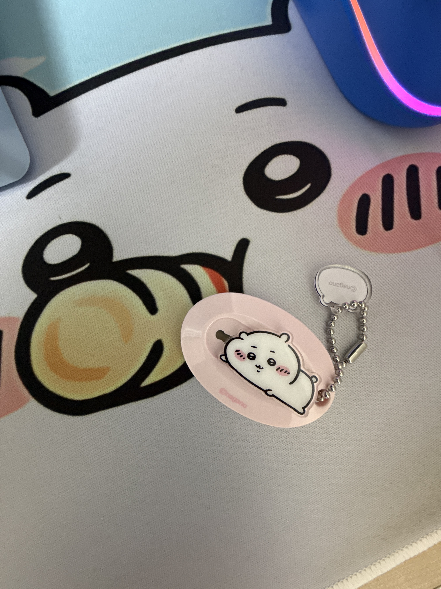
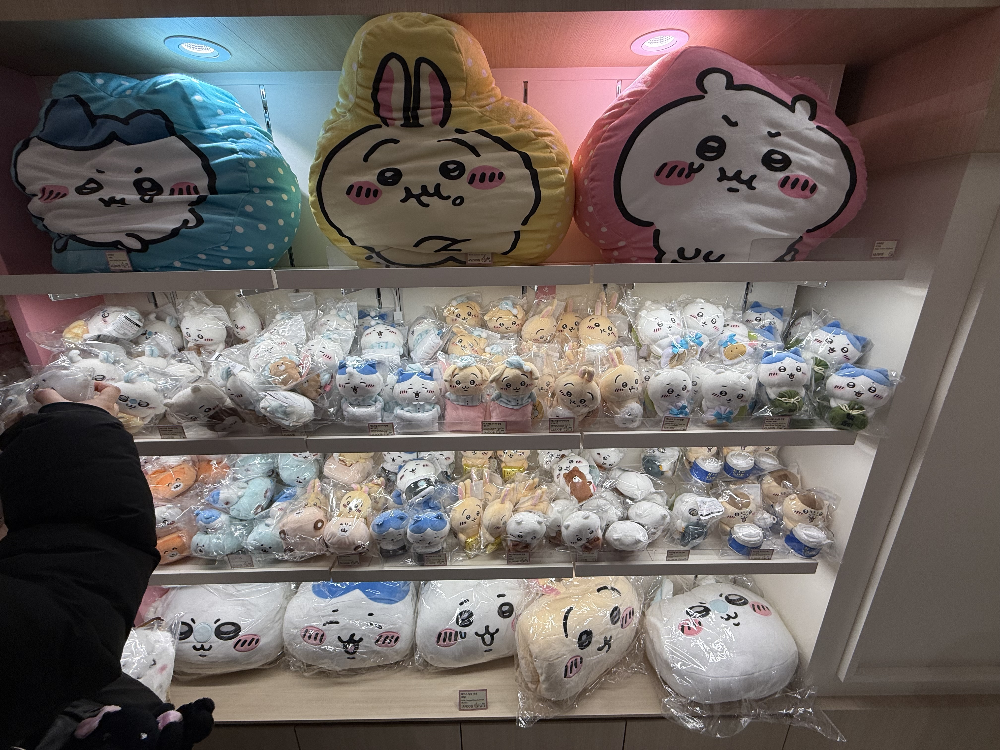
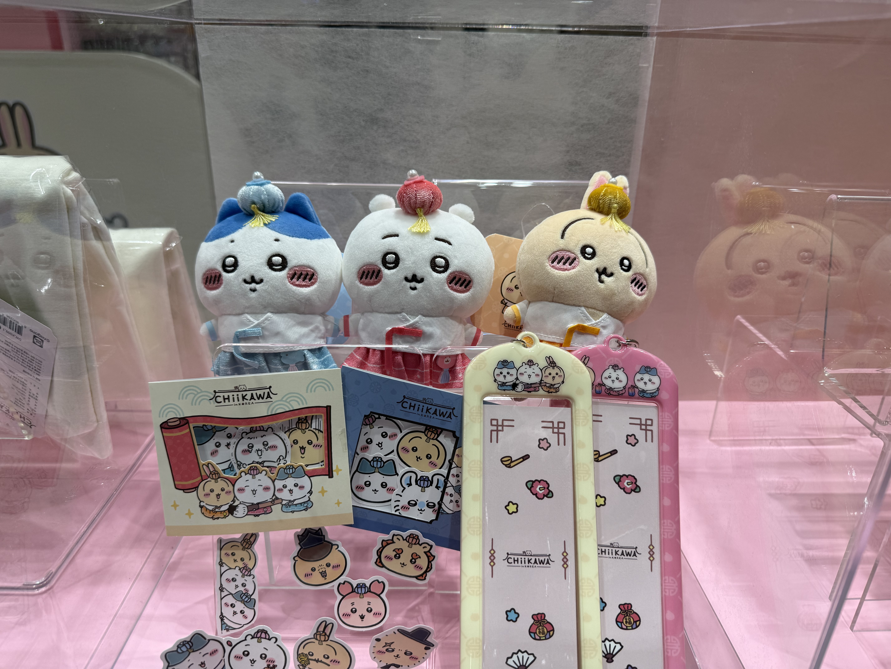

치이카와 (Chiikawa)
"와아아... 엣, 에에..."
항상 눈물이 그렁그렁한 소심하고 마음 여린 주인공입니다. 겁이 많아서 잘 울지만, 친구들이 위험에 처했을 때는 무기를 들고 앞장서서 용기를 내는 외유내강의 정석입니다! 경품 당첨운이 좋아서 푹신한 집에서 살고 있고, 소중한 친구들과 함께 맛있는 것을 먹는 시간을 제일 좋아합니다.
Chiikawa World
소소한 일상과 예상치 못한 모험이 함께하는, 작고 귀여운 친구들의 따뜻한 이야기를 만나보세요.

먼작귀(먼가 작고 귀여운 녀석)의 세계로 초대합니다!
이곳은 작고 귀여운 친구들이 모여 사는 평화로우면서도 은근히
스펙터클한 세상입니다. 맛있는 것을 먹고 예쁜 것을 사기 위해 매일
풀을 뽑거나 무서운 몬스터를 토벌하면서 열심히 하루하루를
살아갑니다. 가끔은 자격증 시험에 떨어져 눈물짓기도 하고, 알 수
없는 위험에 빠지기도 하지만... 서로를 아끼고 위하는 따뜻한 우정
덕분에 언제나 훈훈한 감동과 웃음이 끊이지 않습니다.
"와아아... 엣, 에에..."
항상 눈물이 그렁그렁한 소심하고 마음 여린 주인공입니다. 겁이 많아서 잘 울지만, 친구들이 위험에 처했을 때는 무기를 들고 앞장서서 용기를 내는 외유내강의 정석입니다! 경품 당첨운이 좋아서 푹신한 집에서 살고 있고, 소중한 친구들과 함께 맛있는 것을 먹는 시간을 제일 좋아합니다.

"에에?! 뭐야 뭐야?!"
어두운 동굴에 살지만 누구보다 밝고 긍정적인 고양이 친구입니다. 말을 유창하게 잘해서 치이카와와 우사기 사이에서 대화를 이끌어주는 역할도 톡톡히 하고 있습니다. 친구들을 위해 맛있는 요리도 해주고, 돈을 모아 산 카메라로 추억을 남기는 것을 좋아하는 따뜻한 분위기 메이커입니다.

"야하!!! 우라라라라!!!"
항상 하이 텐션으로 에너지가 폭발하는 자유로운 영혼의 토끼입니다! 알 수 없는 기합 소리를 내며 장난치는 것을 좋아하지만, 알고 보면 남들보다 어려운 자격증도 척척 따내는 똑똑한 엘리트입니다. 어떤 위기 상황에서도 절대 당황하지 않고 여유롭게 밥을 챙겨 먹는 강심장을 가졌습니다.








